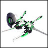
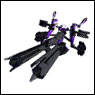
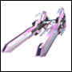
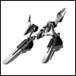

|
| 【高能加农】 高能加农 [必杀技] |
“幸运星”的必杀技。从中央炮身发射高威力光束，对直线及附近的敌人造成巨大伤害。 |
| |
| 【高能爆破】 高能爆破 [必杀技] |
| “十字剑”的必杀技，从机体前方的两根巨大炮身释放能量。 |
| |
| 【收获者】 Harvester [武器/战舰] | |
|  | “EDEN”制造的“纹章机”之一。形式编号“GA-005” 驾驶员为“香草·亚修” 持有收纳「纳米机器」的笼子，具备修理其他纹章机的能力。 必杀技为“治疗波” |
|
|
| 【巴莫尔级巡洋舰】 巴莫尔级巡洋舰 [武器/战列舰] |
| 特兰斯巴尔皇国军的巡洋舰。艾欧尼亚军原本也是皇国军，因此也拥有同型舰。 GA第一作中，塔克特最初乘坐的船就是这种类型。 |
|
|
| 【帕格·吉奥重巡洋舰】 帕格·吉奥重巡洋舰 [武器/战列舰] |
| 「巴鲁·法斯克」军的重巡洋舰 |
|
|
| 【快感扳机】 Happy Trigger [武器/战舰] | |
|  | 「EDEN」制造的「纹章机」之一。形式编号「GA-004」 全长 62.7m/全宽 33.5m/全高 19.2m 驾驶员是「佛特·修特伦」 必杀技是「强袭爆裂」 装备的大部分是实弹武器。 防御力高，但机动力略逊于其他机体。 |
|
|
| 【帕皮翁·追猎者】 帕皮翁·追猎者 [武器/战列舰] | |
|  | 「NEUE」产纹章机之一。结构上与符文天使队的纹章机非常接近。是夏目的祖先代代保管的物品。 只是，与接受「EDEN」技术援助的塞尔达尔不同，维护环境也不算良好，娜兹梅自己也未能完全掌握。 这台机体，作为特征，除了巡航形态、战斗形态之外，在释放必杀技时还会变形为第三形态。 |
| |
| 【飓风踢】 飓风踢 [必杀技] |
| 阿妮丝的踢技。威力足以轻易将人踢飞。 在绝对领域的第九章中，卡兹亚被狠狠地踢飞了。 |
| |
| 【巴鲁斯·泽奥攻击机】 巴鲁斯·泽奥攻击机 [武器/战列舰] |
| 「巴鲁·法斯克」军的攻击机 |
|
|
| 【飞云八爪拳】 飞云八爪拳 [必杀技] |
| 兰花称其为银河最强的弹珠技 |
|
|
| 【比安卡】 比安卡 [角色/通称] |
| 罗塞尔的妹妹。 体弱多病，在罗塞尔的驾驶员训练中去世。称罗塞尔为“哥哥”。 在娜诺娜诺路线中，作为疑似人格登场。试图夺取娜诺娜诺的身体，但因卡兹亚的活跃而逃脱。 |
| |
| 【皮科】 皮科 [行星/卫星] |
| 「NEUE」的行星之一。拥有卫星「费姆特」。 因纳米技术而繁荣，但不知为何变成了无人之地（据说是因为「时间静止」的影响）。 由于强大的防御系统仍在运行，无法轻易登陆。 「新天使队」成员之一「娜诺娜诺」在这里被发现。 |
|
|
| 【叮～咚！！没错～！！】 叮～咚！！没错～！！ [台词/行动] |
| 当卡鲁亚发现草莓全部用来做果酱，草莓不足时说的话。 虽然用魔法制作了草莓，但味道非常糟糕，纳兹梅吃了一口就翻白眼了。 |
| |
| 【先锋艾达】 先锋艾达 [武器/战列舰] | |
 |
「NEUE」制造的「纹章机」之一。型号编号RA-003 驾驶员是「娜诺娜诺·布丁」 能够修理其他纹章机的恢复型 必杀技是「修复波」「针刺冲击」 |
|
|
| 【致命之箭】 致命之箭 [必杀技] |
| 「锐利射手」释放的必杀技。从远距离用长程电磁加农炮射穿敌人。 |
|
|
| 【费姆托】 费姆托 [行星/卫星] |
| 行星「皮科」的卫星。「EDEN」来访后，「月天使队」队员「香草」成为中心，纳米机器的研究蓬勃开展。 |
|
|
| 【光子潜水员】 佛顿大坝 [必杀技] |
| 量产型纹章机圣光布拉特的必杀技。机体直接向敌人发起突击。 |
| |
| 【佛特】 Forte [角色/通称] | |
| “月天使队”成员之一。全名是“佛特·修特伦” 纹章机GA-004“快感扳机”的驾驶员。 |
|
|
|
| 【猪曼珠】 猪曼珠 [娱乐/杂货] |
| 阿妮丝叫薄荷时用的词。 阿妮丝对薄荷说的话似乎会让布拉曼修商会的债务利息增加。 |
| |
| 【浮游卫星扎雷姆多】 浮游卫星扎雷姆多 [武器/战列舰] |
| （真含）“正统特兰斯巴尔皇国”军的攻击型浮游卫星。存在射程、攻击力、防御力强化的“进化型”攻击卫星。由黑月制造，作为防御线使用。 |
|
|
| 【风行者】 风行者 [武器/战列舰] |
| “戏法大师”装备的远程操作单元。 |
|
|
| 【风行者之舞】 风行者之舞 [必杀技] |
| “戏法大师”释放的必杀技。 3个远程操作单元“风行者”对敌人发起攻击的范围攻击。 |
|
|
| 【布拉胖修君】 布拉胖修君 [娱乐/杂货] |
| 布拉曼修商会的吉祥物 |
| |
| 【布拉曼修商船】 布拉曼修商船 [武器/战列舰] |
| 穿梭于宇宙各地，扩展布拉曼修财团商业版图的商船。 也曾为艾尔西欧鲁运送补给物资。 |
|
|
| 【舰桥】 舰桥 [设施] |
| “艾尔西欧鲁”、“露克西欧鲁”均配备的设施之一。 舰长常驻，可以说是舰船的头脑所在。 然而，“塔克特”虽为舰长，却经常外出走动。 |
|
|
| 【勇气之心】 勇气之心 [武器/战列舰] |
| “NEUE”制造的“纹章机”强化部件。 虽为“失落科技”，但未搭载“克洛诺斯弦引擎”，武装也较弱。 拥有从驾驶员的紧张感和“天使”的紧张感中产生相乘效果的系统， 合体后的“纹章机”能发挥出超越性能的力量。 此外，也因此能够进行“轨道机动”。 |
|
|
| 【情侣装】 佩尔克 [娱乐/杂货] |
| 兰花购买的印有彼此肖像的粉色夸张的连帽衫 在GAⅡ(1)中，莉莉准备的印有卡兹亚和彼此肖像的夸张粉色运动衫也会登场 |
| |
| 【H.A.L.O】 平罗 [技术] |
| 「纹章机」的系统与驾驶员的精神相连接并进行控制的操纵系统。 运行时，驾驶员头顶会出现天使光环般的界面。 |
|
|
| 【六角十字破】 必杀螺旋破 [必杀技] |
| 「咒术师」释放的必杀技。宇宙中绘制出魔法阵击破敌人。 |
|
|
| 【贝内迪克坦】 贝内迪克坦 [角色/通称] |
| 全名是「贝内迪克坦·派克」 武器联盟的行星「派克」的统治者。 狡猾且狡诈，决不进行堂堂正正的战斗。擅长谋略，会设下陷阱并在其上歼灭对手。 在皮科的战斗之前，对露克西欧鲁设下陷阱并发起先制攻击，但被击败。 最后被帕尔菲将精神植入无人舰的一部分，并被帕尔菲摧毁。 |
| |
| 【地狱猎犬队】 地狱猎犬队 [军团/队] |
| 作为艾欧尼亚军的部队，多次向月天使队发起挑战的雇佣兵部队。 前期使用西里斯高速战斗机，后期使用黑暗天使使月天使队陷入困境，但最终被诺阿（界面）的手将全员作为黑暗天使的生态核心吸收。 |
| |
| 【变身抑制棒棒糖】 变身抑制棒棒糖 [娱乐/杂货] |
| 卡鲁亚在和卡兹亚在霍科利行星度假时，为了不让特基拉变身而制作的特制巧克力棒棒糖。 卡鲁亚因诅咒而暴走时，通过让卡鲁亚吃下这个棒棒糖，使其安静下来，从而发挥了作用。但另一方面，卡兹亚对“罗泽尔”和特基拉关系变好感到不安，向米莫雷特提起棒棒糖的事情时被卡鲁亚听到，并传到了特基拉那里，差点危及卡兹亚和特基拉的关系。 |
| |
| 【彭罗斯】 彭罗斯[武器/战列舰] |
| 特兰斯巴尔皇国军的第11舰队旗舰。曾一度拯救了艾尔西欧鲁的危机。 |
| |
| 【霍科利】 霍科利 [行星/卫星] |
| “NEUE”的行星之一。属于“塞尔达尔联合王国”。 配备了各种度假环境，每天都有各种活动举行。 |
|
|
| 【神圣血液】 神圣血液 [武器/战列舰] | |
|  | 基于“任何人都能驾驶的纹章机”概念，由诺阿设计制造的量产型纹章机的试作机。以EDEN的纹章机为基础，机身后部搭载了惯性控制单元。 必杀技是，“光子潜水员”。驾驶员是罗泽尔。 发挥其实力需要极其罕见的操纵感。 |
| |
| 感谢您向GA术语集投稿。 |
| 您投稿的术语将在经过审查后，收录在GAII最新作“永劫回归的时刻”豪华版特典的小册子，《GA百科全书》中。 此外， 向GA术语集投稿的各位将被列为“为GA术语集贡献力量的各位”在此处刊登您的名字承蒙您的允许。 此次在GA术语集中收到了大量的投稿，真的非常感谢。 |
© BROCCOLI